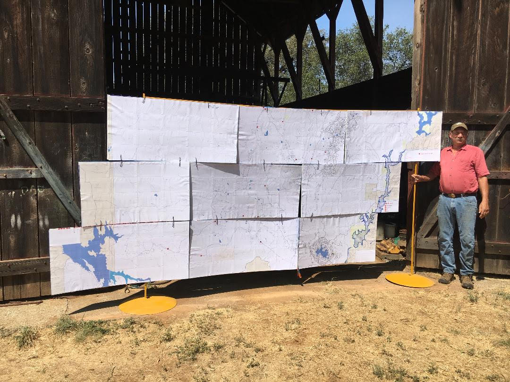

Our first NID Operations Map Event is Tomorrow!
Join us at the Nevada City Farmer's Market on September 1st, 2018 between 8:30am and 1:00pm

NID Operation Map Showing Event
Mike Pasner of Indian Springs Organic Farm is working with many water users to change NID policy to reduce Aquatic Herbicides dripped directly into 350 miles of irrigation ditches, which includes 33 miles of natural creeks.There are other viable methods to control weeds and algae.
Mike has created three large NID operations maps (6'x12' each) depicting a high level of detail of NID's entire district and the proposed Centennial Dam. These maps will be on display at the Nevada City Farmer's Market on Saturday, September 1, 2018.
NID will only change its poison dependency if enough people join together in protest.
So join us this Saturday at the Nevada City Farmer's Market, and email us at SafeDitches@gmail.com to learn about future events.